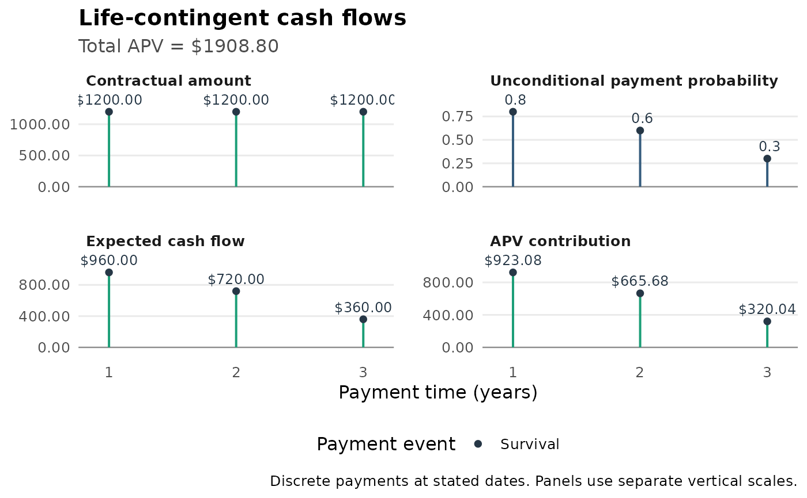
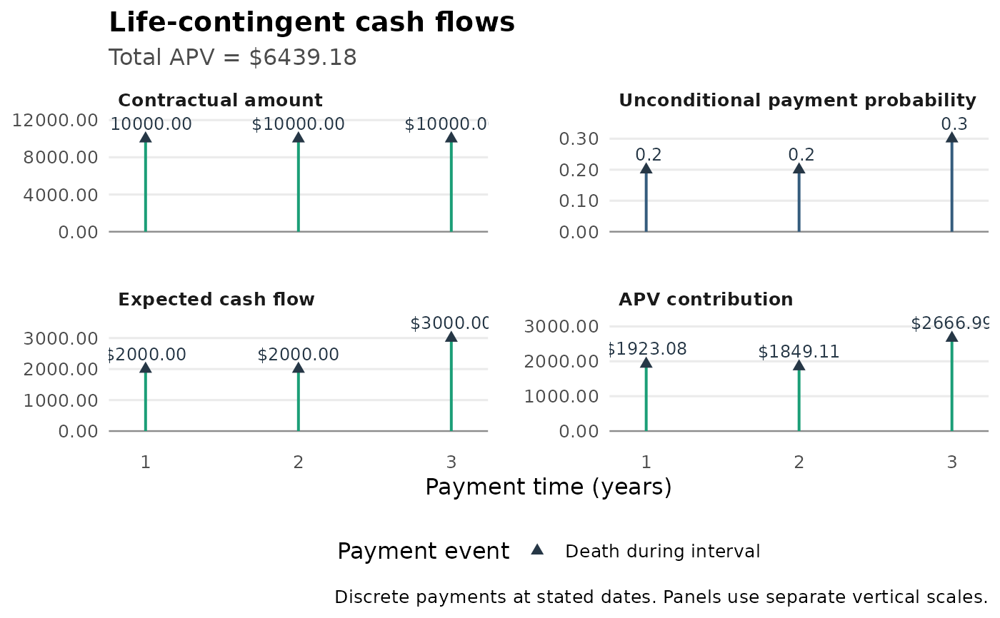
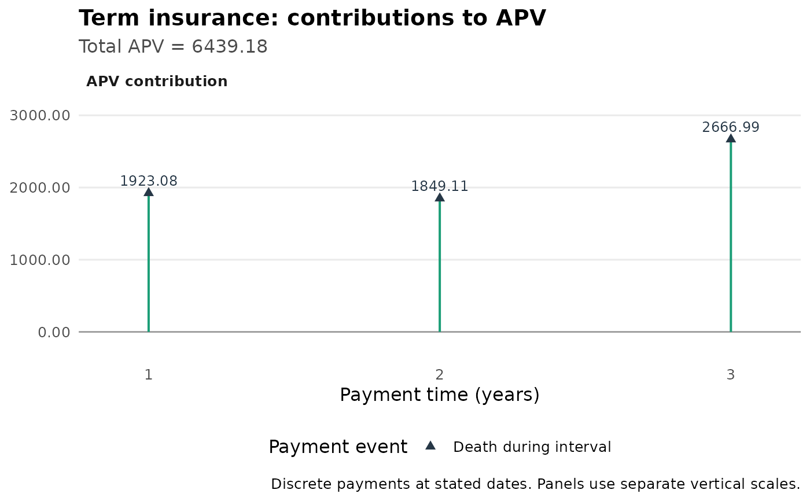

Plot discrete life-contingent cash flows
Source:R/plot_contingent_cash_flow.R
plot_contingent_cash_flow.RdSeparates contractual amounts, unconditional payment probabilities, expected
cash flows and actuarial present-value contributions in editable panels.
Consumes the payment-level output of apv_life_flow() without recomputing
mortality, dates or interest, or an explicitly specified event table.
Usage
plot_contingent_cash_flow(
.data,
view = c("all", "contractual", "probability", "expected", "pv"),
title = NULL,
subtitle = NULL,
x_label = NULL,
show_labels = TRUE,
label_size = 3.2,
label_digits = 2L,
label_format = c("auto", "full", "compact"),
currency = "",
col_inflow = "#1B9E77",
col_outflow = "#D95F02",
date_labels = "%Y-%m-%d"
)Arguments
- .data
A nonempty data frame or tibble. Supply an
apv_life_flow()result, or columnst,cf,probability,discountandevent. Optionaldatesupplies the horizontal calendar axis. Optionalexpected_cfandpvare reused after consistency checks.- view
One of
"all","contractual","probability","expected", or"pv". The default shows four panels with separate vertical scales.- title, subtitle
Optional plot title and subtitle.
- x_label
Optional horizontal axis label.
- show_labels
Logical. Show amount/probability labels, omitting text that overlaps at rendering time. All payment rows remain in the plot.
- label_size
Positive text size.
- label_digits
Integer between 0 and 50 for monetary labels.
- label_format
Monetary notation:
"auto","full", or"compact", as inplot_cash_flow(). Probabilities/weights use separate unitless labels.- currency
Monetary prefix; never applied to probabilities or weights.
- col_inflow, col_outflow
Colors for positive and negative monetary flows.
- date_labels
Calendar label format for
ggplot2::scale_x_date().
Value
An editable ggplot2 object. Its tibble data has one row per
payment per selected measure: row, t, x, event, measure, value,
plot_value and label. value retains original units; extreme monetary
panels use scaled plot_value with the power of ten in the panel title.
Details
For a binary payment event \(E_j\), contractual signed amount \(C_j\), payment date \(t_j\) and deterministic discount \(d_j\), the panels show $$C_j,\quad p_j=P(E_j),\quad C_jp_j,\quad C_jp_jd_j.$$ Probabilities are unconditional relative to the common initial actuarial state, not conditional annual mortality rates. For survival payments, \(p_j={}_{t_j}p_x\). For death in \((a,b]\), \(p_j={}_ap_x-{}_bp_x={}_ap_x\,{}_{b-a}q_{x+a}\). A benefit payable at the end of that interval is discounted to its payment date, not the exact time of death. Continuous death-time benefits require a different model.
In explicit event tables, event contains "survival", "death_interval"
or "certain" (the last requires probability one). Interval probabilities
must be supplied; the plot never differences arbitrary rows of a stream.
Rows may represent different events at the same date; probabilities are
never added or netted. Coincident stems can overlap; points identify their
endpoints and no payment date is moved. Negative amounts denote outflows.
For new apv_life_flow() results, contingency metadata distinguishes binary
survival from a reversionary expected benefit fraction. For the latter,
surv_prob is \(P(\text{all alive})+\alpha P(\text{some but not all alive})\),
not generally a probability: the second panel is labeled Expected benefit
fraction. Results lacking metadata use the conservative label Payment
weight; no event is inferred from column names alone. Explicit tables can
use event = "weighted" for such finite multipliers as well.
life_contract() stores a specification, and insurance_x()/annuity_x()
return aggregate values rather than payment schedules. These objects cannot
be plotted directly: supply an explicit payment table instead. The plot
does not expand contracts or reevaluate actuarial assumptions.
All required numeric values must be finite, with nonnegative t and
discount, and probabilities in \([0,1]\) for binary events. Missing or
inconsistent rows are rejected, never silently removed. Supplied expected
amounts and PVs must agree with the identities to relative tolerance 1e-10;
they are retained, not replaced. The plot ignores cached APV/cumulative
attributes and sums the displayed contributions. Calendar dates and stored
t are retained; in particular apv_life_flow() uses actual days/365.25.
All rows must share a valuation origin and monetary unit.
Examples
lt <- tibble::tibble(x = 60:64, lx = c(1000, 800, 600, 300, 0))
apv_life_flow(lt, ages = 60, t = 1:3, cf = rep(1200, 3), i = 0.04) |>
plot_contingent_cash_flow(currency = "$")

# Three-year term insurance, paid at each year-end of death.
# P(j-1 < T <= j) = (l[x+j-1] - l[x+j]) / l[x], not q[x+j-1].
death_flows <- tibble::tibble(
t = 1:3, cf = rep(10000, 3),
probability = c(200, 200, 300) / 1000,
discount = 1.04^-(1:3), event = "death_interval"
)
death_flows |> plot_contingent_cash_flow(currency = "$")

death_flows |> plot_contingent_cash_flow(view = "pv") +
ggplot2::labs(title = "Term insurance: contributions to APV")
